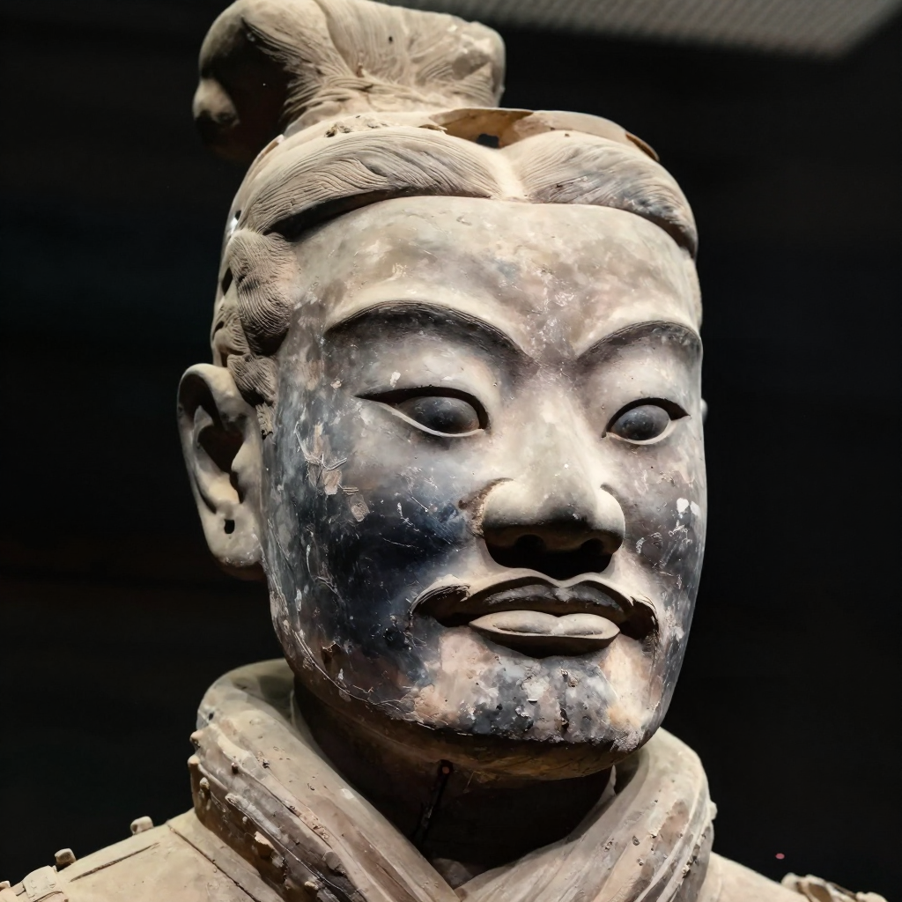
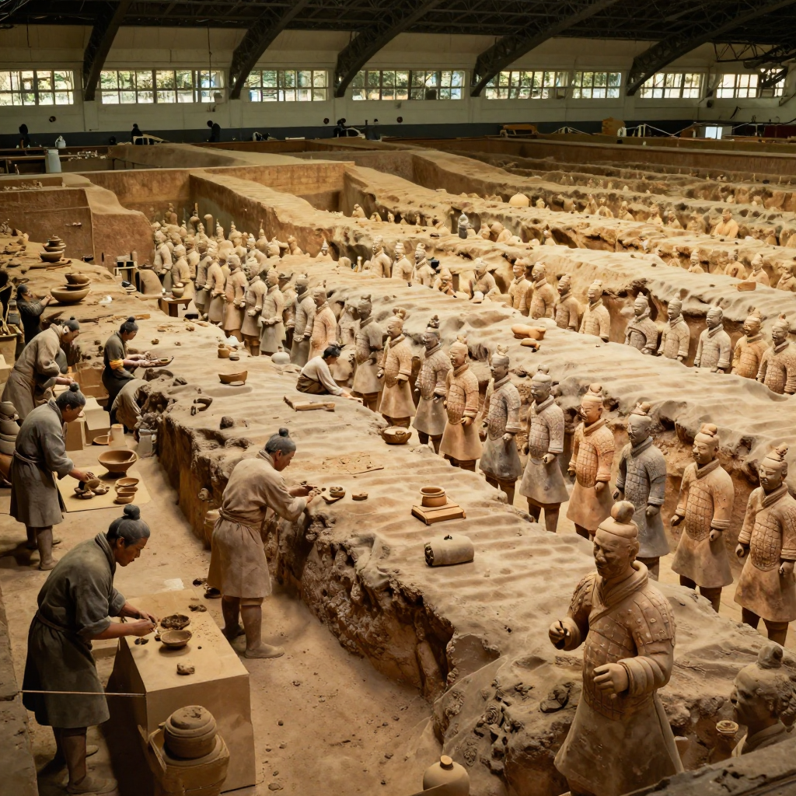

The Terracotta Army: 8,000 Clay Soldiers!

Over 8,000 life-sized clay soldiers were buried underground for over 2,000 years!
Imagine digging a well in your backyard and finding an army of soldiers staring back at you! That's exactly what happened to some farmers in China in 1974. They had just discovered one of the greatest archaeological finds in history: the Terracotta Army.
This underground army of 8,000 clay soldiers was built over 2,200 years ago to protect China's first emperor in the afterlife. And here's the most amazing part: every single soldier has a unique face!
An Incredible Discovery
In March 1974, farmers in Xi'an, China were digging a well when they hit something hard. It wasn't rock - it was a life-sized clay head! They kept digging and found more heads, then bodies, then weapons.
Archaeologists rushed to the site and discovered something incredible: an entire underground army buried in massive pits. The soldiers were arranged in battle formation, ready to fight for their emperor in the afterlife!

Each of the 8,000 soldiers has completely unique facial features - no two are alike!
🎨 Once Colorful
When they were first made, the soldiers were painted in bright colors - red, blue, green, and purple! But when exposed to air after 2,200 years underground, the paint quickly flaked off. Now they're the color of clay.
Who Built This Army?
The Terracotta Army was created for Qin Shi Huang - the first emperor to unite China. He became king at just 13 years old and immediately began planning his tomb.
Emperor Qin wanted to be protected in the afterlife, so he ordered the creation of an entire army. The project took about 40 years and involved around 700,000 workers!
How Were They Made?

Artisans worked in massive workshops to create thousands of life-sized clay soldiers.
Creating 8,000 life-sized soldiers was a massive undertaking. Here's how they did it:
1. Assembly Line: Workers used molds to make the basic parts - legs, torsos, arms, and heads. These were like ancient factory parts!
2. Custom Faces: While the bodies were similar, artisans hand-carved each face to make it unique. They added mustaches, beards, and different expressions.
3. Firing: The clay pieces were baked in huge kilns at extremely high temperatures to make them hard and durable.
4. Assembly: Workers put the parts together like giant puzzles, then painted them bright colors.
⚔️ Real Weapons!
The soldiers carried real bronze weapons - swords, spears, and crossbows! After 2,200 years underground, many weapons were still sharp enough to cut paper!
Not Just Soldiers!
The underground complex contains more than just soldiers:
- 🐎 Chariots and horses: Over 130 chariots with 520 horses
- 🎭 Entertainers: Musicians and acrobats to amuse the emperor
- 🏛️ Officials: Government workers to help run the afterlife empire
- 🐦 Animals: Birds and other animals for food and companionship
The Mystery
Despite decades of excavation, much of the emperor's tomb remains unexplored. Ancient writings describe it as containing rivers of mercury and a ceiling decorated with pearls to look like the night sky.
Scientists have detected high levels of mercury in the soil around the tomb! But the Chinese government has decided not to excavate the main tomb chamber yet - they want to wait until technology can preserve whatever is inside.
Visiting Today
The Terracotta Army is now a UNESCO World Heritage Site and one of China's most popular tourist attractions. Over a million people visit each year to see the incredible clay soldiers standing guard after two millennia underground.
The Terracotta Army remains one of humanity's most amazing creations - an eternal army built by an emperor who wanted to rule forever!
Clear Summary for Readers of All Ages
The Terracotta Army: 8,000 Clay Soldiers! can sound dramatic, but the best way to understand it is to separate strong evidence from speculation. This article is written to be clear enough for younger readers while still useful for adults who want reliable context.
In simple terms, this topic matters because it connects three ideas: what happened, how we know, and what remains uncertain. The core story in The Terracotta Army: 8,000 Clay Soldiers! is easier to follow when we use a timeline, define key terms, and point directly to sources.
Over 8,000 life-sized clay soldiers were buried underground for over 2,000 years!
Background Timeline (What Happened, Step by Step)
- That's exactly what happened to some farmers in China in 1974.
- In March 1974, farmers in Xi'an, China were digging a well when they hit something hard.
- Experts continue revisiting The Terracotta Army: 8,000 Clay Soldiers! as better tools and stronger source checks become available.
- Experts continue revisiting The Terracotta Army: 8,000 Clay Soldiers! as better tools and stronger source checks become available.
- Experts continue revisiting The Terracotta Army: 8,000 Clay Soldiers! as better tools and stronger source checks become available.
This timeline view helps younger readers build a mental map, and it helps adult readers evaluate whether later claims fit the documented sequence of events.
What We Know with Strong Support
Across discussions of The Terracotta Army: 8,000 Clay Soldiers!, several points are consistently supported by records or repeatable analysis:
- Over 8,000 life-sized clay soldiers were buried underground for over 2,000 years!
- Imagine digging a well in your backyard and finding an army of soldiers staring back at you!
- They had just discovered one of the greatest archaeological finds in history: the Terracotta Army .
- This underground army of 8,000 clay soldiers was built over 2,200 years ago to protect China's first emperor in the afterlife.
These claims are stronger because they can be checked independently, rather than depending on one dramatic story or one unverified source.
How Researchers Study This Topic
Good history is a method, not just a story. When experts examine The Terracotta Army: 8,000 Clay Soldiers!, they usually combine source criticism, technical analysis, and contextual comparison.
- Archaeologists compare excavation reports, layer dates, and artifact context rather than relying on isolated objects.
- Museum catalogs and conservation notes help separate original features from later restoration changes.
- Scholars test competing interpretations against material evidence, inscriptions, and parallel finds from nearby sites.
For readers aged 7+, a simple rule is helpful: if someone makes a big claim, ask, “What is the evidence, and can another expert check it?”
What Experts Still Debate
Even with good evidence, not every question has a final answer. In The Terracotta Army: 8,000 Clay Soldiers!, debates often continue because the surviving data is incomplete, damaged, or interpreted in different ways.
One common source of confusion is mixing the topics of An Incredible Discovery, Who Built This Army?, and How Were They Made? as if they prove the same thing. In reality, each part of the story may require different standards of proof.
A balanced approach is to keep uncertainty visible: we can confidently state what records show today, while leaving room for future evidence to update the picture.
Myths vs. Evidence
Myth: If a topic is mysterious, experts have no idea what happened.
Evidence-based view: Usually, experts know many parts of the story; the debate is about specific details.
Myth: The most dramatic explanation is probably true.
Evidence-based view: The best explanation is the one that matches the most verifiable facts with the fewest assumptions.
Myth: New claims automatically replace old research.
Evidence-based view: New claims become accepted only after careful checks, replication, and critical review.
Why This Story Still Matters Today
The Terracotta Army: 8,000 Clay Soldiers! is not only a curiosity from the past. It is also a practical lesson in how people evaluate information. In a world full of fast headlines, this topic reminds us to slow down, check sources, and separate confidence from certainty.
For younger readers, this builds critical-thinking skills. For adult readers, it improves media literacy and historical judgment. In both cases, the goal is the same: understand the past clearly enough to make better decisions in the present.
Mini Glossary (Plain Language)
- Primary source: A record made close to the event, like a report, letter, inscription, or official document.
- Secondary source: A later explanation that interprets primary evidence.
- Hypothesis: A proposed explanation that must be tested against evidence.
- Consensus: The view most experts currently support, knowing it can change with new data.
- Context layer: The archaeological layer where an object is found, which helps date and interpret it.
- Provenance: The known history of where an artifact came from and who handled it over time.
Quick Recap
If you remember only three things about The Terracotta Army: 8,000 Clay Soldiers!, keep these: (1) there is real evidence worth studying, (2) some questions remain open, and (3) careful source-checking is the best path to reliable understanding.
That combination of curiosity and caution is what turns a mystery into a meaningful history lesson for readers of every age.
References & Further Reading
Editorial note: We cross-check claims across multiple independent sources. See our Editorial Policy.